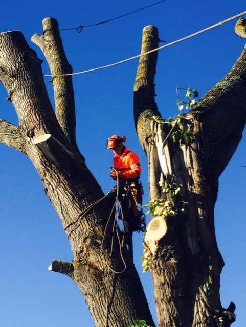

Arborist – Tre års erfarenhet av trädvård och klättring
Jag arbetade som arborist i tre år, där jag fokuserade på trädvård, beskärning och säker trädfällning. Yrket krävde precision, säkerhetstänk och god fysik, då jag ofta arbetade på hög höjd med rep och sele. Under denna tid utvecklade jag en stark problemlösningsförmåga och ett öga för detaljer, samtidigt som jag fick arbeta nära naturen och skapa hållbara lösningar för både träd och miljö.